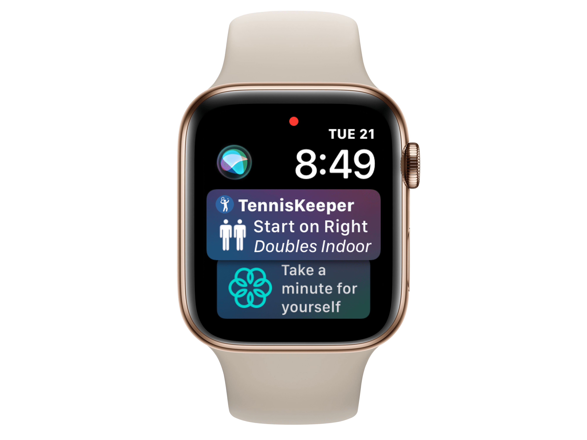

The Apple Watch Siri Watch Face displays information that’s timely and helpful. It might be your next appointment, the traffic on your way home, or the time the sun sets, and you can tap to get more information. You can also turn the Digital Crown to scroll through your day.
You can launch TennisKeeper directly from the Siri Watch Face by tapping on its platter. The platter is populated with the same launch parameters as your last session. This makes it easy for users that always use TennisKeeper in the same way.
You can set up Siri Watch Face directly on Apple Watch or you can use the Watch app from your iPhone:
If you are using your Siri Watch Face, Siri will overtime learn what apps you use and what data you need and present
them to you at the right time. From a TennisKeeper perspective, it shares the
data about your last session, and if it is something that you want to repeat,
you can simply tap on the platter to start a new session. Will the TennisKeeper platter shows
up at the right time? That is completely between you and the Siri prediction engine.
